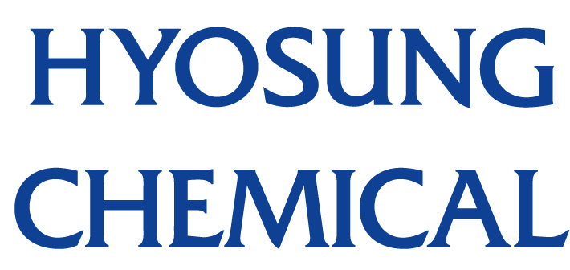
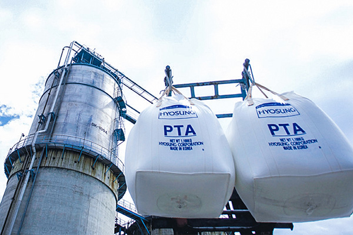

home>사업소개> 화학사업
화학사업

“편리한 일상생활에는 언제나 효성의 화학소재기술이 함께 합니다.”
-
- CHEMICAL BUSINESS.
- 아시아와 유럽, 중동 등으로 수출되는 TPA와 국내 최고의 시장점유율을 차지하고 있는 폴리프로필렌 (PP)을 비롯해 각종 필름, 불소가스 등 다양한 화학제품을 생산하고 있으며, 특히 세계 최초 상용화에 성공한 폴리케톤은 고분자 신소재로서 우수한 물성과 경쟁력을 바탕으로 전 세계 부품산업을 주도할 핵심소재입니다.
- 
-
효성화학
- 국내 최고의 시장점유율을 자랑하는 첨단 원천소재
- 효성티앤씨㈜는 Global No.1 스판덱스 브랜드 '크레오라'를 비롯, 나일론, 폴리에스터 원사와 직물, 염색 가공제품을 생산·공급을 통해 효성화학㈜는 아시아와 유럽, 중동 등으로 수출되는 TPA와 국내 최고의 시장점유율을 차지하고 있는 폴리프로필렌(PP)을 비롯해 각종 필름, 블소가스 등 다양한 화학제품을 생산하고 있습니다.

-
PP/DH
- PP(Polypropylene)
- PPDH PU의 PP 브랜드 'TOPILENE'은 Hypol 공법과 Unipol 공법으로 Homo-polymer, Block co-polymer, Random co-polymer 등의 다양한 제품을 보유하고 있습니다. 수준 높은 기술이 요구되는 특수용도 제품들은 고온내압성, 고강성, 고내충격성, 투명 등 우수한 기능성을 지녀 다양하고 수준 높은 고객 요구에 부응하고 있습니다
- 
-
POK
- TPA(고순도 테레프탈산)
- TPA PU는 고기능성 폴리에스터 섬유의 주원료일 뿐 아니라 타이어코드, 페트병, 폴리에스터 필름 등 각종 산업 및 생활 소재의 원료로 사용되는 고순도 TPA를 연간 42만 톤 규모로 생산·공급합니다
-
필름
- 나일론 필름(식품포장용, 제약용, 2차전지용)
- Nylon 필름은 충격강도, 내핀홀성, 인쇄성, 산소차단성이 우수한 소재로 식품포장 및 다양한 생활용품의 포장재로 널리 활용되고 있습니다. 효성화학의 나일론 필름은 안정된 품질을 바탕으로 국내 나일론 필름 시장 1위로서 시장을 선도하고 있으며 중국 증설을 통해 Global Leader로 도약하고 있습니다.
-
NEOCHEM
- 삼불화질소(NF3)
- 최첨단 산업인 반도체, Display, 태양전지 등에 사용하는 산업용 특수가스, 삼불화질소(NF3 Gas)를 자체적으로 개발한 Neochem PU는 최신 설비와 화학분야에서 쌓아온 효성화학의 노하우와 기술력을 통해 고품질의 제품을 생산 및 판매하고 있습니다. 또한 반도체, Display 시장의 확대 추세에 발맞춰 생산라인을 지속적으로 증설, 안정적인 공급 체계를 구축했으며 특수가스 전문 생산업체를 목표로 다양한 제품 생산을 추진하고 있습니다.